線とコネクタ
コネクタは、図中の要素間の通信経路、データフローの向き、および構造的な関係性を表現します。
drawlib.lines モジュールは、直線、滑らかな円弧、2 次および 3 次ベジェ曲線、多点の直交（マンハッタン）折れ線、角丸（フィレット）付き折れ線、複合パス、楕円弧コネクタを網羅する 8 つのベクターコネクタ関数を提供します。
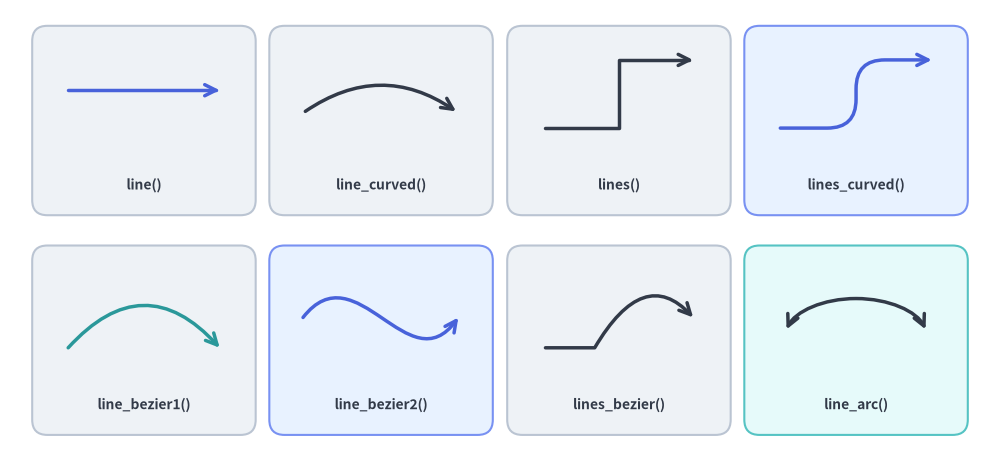
Source Code
from drawlib.canvas import save, setup
from drawlib.lines import (
line,
line_arc,
line_bezier1,
line_bezier2,
line_curved,
lines,
lines_bezier,
lines_curved,
)
from drawlib.shapes import rectangle
from drawlib.styles import Styles
from drawlib.text import text
setup(width=132, height=62)
# Background cards for the 4x2 showcase grid
cols = [19, 50.3, 81.7, 113]
for c_idx, cx in enumerate(cols):
r1_st = Styles.PrimaryNeutral if c_idx == 3 else Styles.Neutral
r2_st = Styles.PrimaryNeutral if c_idx == 1 else (Styles.SecondaryNeutral if c_idx == 3 else Styles.Neutral)
rectangle((cx, 46), width=29.5, height=25, style=r1_st.patch(shape_r=2))
rectangle((cx, 17), width=29.5, height=25, style=r2_st.patch(shape_r=2))
lbl = Styles.DarkBold.patch(text_size=10.0)
# Row 1: Straight line, circular arc spline, polyline, and filleted polyline
line((9, 50), (29, 50), arrow_head="->", style=Styles.PrimaryBold)
text((19, 37.5), "line()", style=lbl)
line_curved((40, 47), (60.5, 47), bend=-0.35, arrow_head="->", style=Styles.DarkBold)
text((50.3, 37.5), "line_curved()", style=lbl)
lines([(72, 45), (81.7, 45), (81.7, 54), (91.5, 54)], arrow_head="->", style=Styles.DarkBold)
text((81.7, 37.5), "lines()", style=lbl)
lines_curved([(103, 45), (113, 45), (113, 54), (123, 54)], r=3.8, arrow_head="->", style=Styles.PrimaryBold)
text((113, 37.5), "lines_curved()", style=lbl)
# Row 2: Quadratic Bézier, cubic Bézier, compound Bézier path, and elliptical arc
line_bezier1((9, 16), (29, 16), cp=(19, 27), arrow_head="->", style=Styles.SecondaryBold)
text((19, 8.5), "line_bezier1()", style=lbl)
line_bezier2((40, 20), (60.5, 20), cp1=(47, 29), cp2=(54, 11), arrow_head="->", style=Styles.PrimaryBold)
text((50.3, 8.5), "line_bezier2()", style=lbl)
lines_bezier((72, 16), [(78.5, 16), ((85, 27), (91.5, 20))], arrow_head="->", style=Styles.DarkBold)
text((81.7, 8.5), "lines_bezier()", style=lbl)
line_arc((113, 17), width=19, height=11, angle_start=15, angle_end=165, ccw=True, arrow_head="<->", style=Styles.DarkBold)
text((113, 8.5), "line_arc()", style=lbl)
save()
1. インポートと概要
すべての直線・曲線関数は drawlib.lines からインポートします。
from drawlib.lines import (
line, # Straight line segment between xy1 and xy2
line_curved, # Circular arc spline between xy1 and xy2 with scalar bend
line_bezier1, # Quadratic Bézier curve with 1 control point (cp)
line_bezier2, # Cubic Bézier curve with 2 control points (cp1, cp2)
lines, # Multi-point polyline through a sequence of coordinates
lines_curved, # Multi-point polyline with automatic corner fillet radius r
lines_bezier, # Multi-segment path mixing straight, quadratic, and cubic Béziers
line_arc, # Open circular or elliptical arc connector
)
2. 先端の矢印と線のスタイル設定 (Style)
2.1. arrow_head パラメータ
drawlib.lines の全 8 関数は、キーワード引数 arrow_head を受け取ります。
arrow_head の値 |
端点マーカーの挙動 | 説明 |
|---|---|---|
"" または "-" |
矢印なし（通常の線） | 端点マーカーを持たない無向の線 （デフォルト）。 |
"->" |
終点に順方向の矢印 | 終点側（xy2 または最終頂点）に順方向の矢印を描画します。 |
"<-" |
始点に逆方向の矢印 | 始点側（xy1 または最初の頂点）に逆方向の矢印を描画します。 |
"<->" |
両端に双方向の矢印 | 始点と終点の両方に双方向の矢印を描画します。 |
2.2. Style の矢印・破線パターン属性
線のストローク外観や矢印の形状は、Style の各属性（.patch() でカスタマイズ可能）によって制御します。
Style 属性 |
型 | デフォルト | 説明 |
|---|---|---|---|
line_color |
Color | tuple | str |
テーマ色 | 線のストローク色（および矢印の色）。例: Colors.Dark、Colors.Primary。 |
line_width |
float |
1.5（Bold は 2.5、Thin は 0.75） |
ポイント単位の線の太さ。 |
line_style |
"solid" | "dashed" | "dotted" | "dashdot" |
"solid" |
線の破線パターン。 |
line_arrow_head_fill |
bool |
False |
False は開いた V 字型の線矢印（->）、True は塗りつぶされた三角形の矢印（-|>）を描画します。 |
line_arrow_head_scale |
float |
20.0 |
端点の矢印に対する物理サイズの倍率。 |
alpha |
float |
1.0 |
線と矢印全体の不透明度（0.0 の完全透明から 1.0 の完全不透明まで）。 |
from drawlib.canvas import save, setup
from drawlib.lines import line
from drawlib.shapes import rectangle
from drawlib.styles import Colors, Styles
from drawlib.text import text
setup(width=128, height=62)
# Left Panel: 4 Stroke Dash Patterns (style.line_style)
rectangle((32, 31), width=56, height=54, style=Styles.Neutral.patch(shape_r=2))
text((32, 51), "Dash Patterns (line_style)", style=Styles.DarkBold.patch(text_size=11.0))
dash_specs = [
(41, "solid", '"solid"', Colors.Dark),
(31, "dashed", '"dashed"', Colors.Primary),
(21, "dotted", '"dotted"', Colors.Secondary),
(11, "dashdot", '"dashdot"', Colors.Danger),
]
for y, pattern, label, col in dash_specs:
text((8, y), label, style=Styles.DarkBold.patch(text_size=10.0, halign="left"))
line(
(29, y),
(56, y),
arrow_head="->",
style=Styles.DarkBold.patch(line_style=pattern, line_color=col, line_width=2.0),
)
# Right Panel: Arrowhead Fill & Scale (line_arrow_head_fill / line_arrow_head_scale)
rectangle((94, 31), width=60, height=54, style=Styles.PrimaryNeutral.patch(shape_r=2))
text((94, 51), "Arrowhead Fill & Scale", style=Styles.DarkBold.patch(text_size=11.0))
arrow_specs = [
(41, "Stick (fill=False)", "->", False, 20.0, 2.0),
(31, "Filled (fill=True)", "->", True, 20.0, 2.0),
(21, "Two-Way (<->)", "<->", True, 20.0, 2.0),
(11, "Large (scale=32)", "->", True, 32.0, 2.5),
]
for y, label, head, fill_flag, scale_val, width_val in arrow_specs:
text((67, y), label, style=Styles.DarkBold.patch(text_size=10.0, halign="left"))
line(
(100, y),
(120, y),
arrow_head=head,
style=Styles.PrimaryBold.patch(
line_arrow_head_fill=fill_flag,
line_arrow_head_scale=scale_val,
line_width=width_val,
),
)
save()
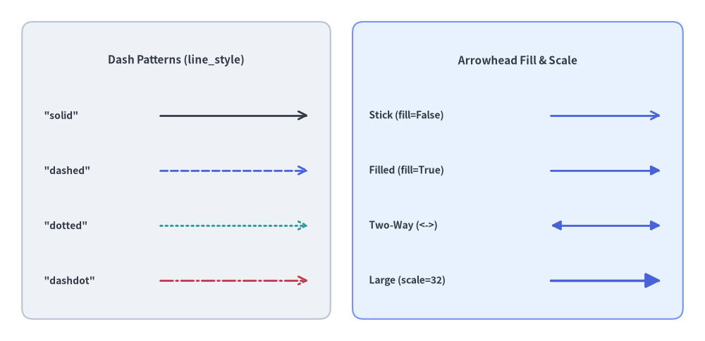
3. 2 点間の直線と曲線
3.1. 直線 (line)
2 つの座標 xy1 と xy2 を真っ直ぐな線分で結びます。
line(
xy1: tuple[float, float],
xy2: tuple[float, float],
*,
style: Style,
arrow_head: Literal["", "-", "->", "<-", "<->"] | str = "",
) -> None
| パラメータ | 型 | デフォルト | 説明 |
|---|---|---|---|
xy1 |
tuple[float, float] |
必須 | キャンバス座標における始点 (x1, y1)。 |
xy2 |
tuple[float, float] |
必須 | キャンバス座標における終点 (x2, y2)。 |
style |
Style |
必須 | 線スタイルトークン（例: Styles.DarkBold、Styles.PrimaryBold）。 |
arrow_head |
str |
"" |
任意の矢印マーカー（""、"-"、"->"、"<-"、"<->"）。 |
from drawlib.canvas import save, setup
from drawlib.lines import line
from drawlib.shapes import rectangle
from drawlib.styles import Styles
from drawlib.text import text
setup(width=120, height=54)
rectangle((60, 27), width=112, height=46, style=Styles.Neutral.patch(shape_r=2))
rows = [
(42, 'arrow_head="" (Styles.DarkBold)', "", Styles.DarkBold),
(32, 'arrow_head="->" (Styles.DarkBold)', "->", Styles.DarkBold),
(22, 'arrow_head="<-" (Styles.PrimaryDashed)', "<-", Styles.PrimaryDashed.patch(line_width=2.0)),
(12, 'arrow_head="<->" (Styles.DangerDotted)', "<->", Styles.DangerDotted.patch(line_width=2.0)),
]
for y, label, head, st in rows:
text((8, y), label, style=Styles.DarkBold.patch(text_size=10.5, halign="left"))
line((76, y), (111, y), arrow_head=head, style=st)
save()
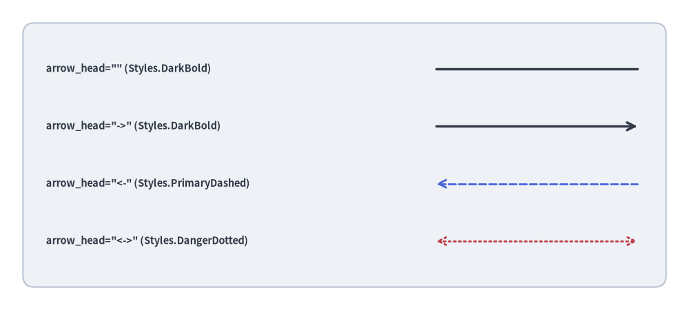
3.2. 滑らかな円弧スプライン (line_curved)
単一の曲率スカラー係数 bend で制御される円弧スプラインを xy1 と xy2 の間に描画します。
line_curved(
xy1: tuple[float, float],
xy2: tuple[float, float],
*,
style: Style,
bend: float = 0,
arrow_head: Literal["", "-", "->", "<-", "<->"] | str = "",
) -> None
| パラメータ | 型 | デフォルト | 説明 |
|---|---|---|---|
xy1 |
tuple[float, float] |
必須 | 始点座標 (x1, y1)。 |
xy2 |
tuple[float, float] |
必須 | 終点座標 (x2, y2)。 |
style |
Style |
必須 | 線スタイルトークン（必須キーワード引数）。 |
bend |
float |
0 |
進行方向 xy1 -> xy2 に対する曲率ラジアン係数（0 = 直線）。 |
arrow_head |
str |
"" |
任意の矢印マーカー（""、"-"、"->"、"<-"、"<->"）。 |
曲率方向のルール（進行方向 xy1 -> xy2 基準の bend）
内部的に line_curved() は ConnectionStyle.Arc3(rad=bend) を使用しており、曲率は xy1 から xy2 へ向かう観測者の進行方向を基準に決まります。
bend = 0（デフォルト）: 完全な直線セグメントになります。bend < 0: 進行ベクトルxy1 -> xy2に対して右側へ膨らむように湾曲します（(15, 22)から(85, 22)へ左から右に引く場合は上向きに弧を描きます）。bend > 0: 進行ベクトルxy1 -> xy2に対して左側へ膨らむように湾曲します（(15, 22)から(85, 22)へ左から右に引く場合は下向きに弧を描きます）。- リクエスト／レスポンス対称化のヒント:
A -> BへのリクエストとB -> Aへのレスポンスに同じ符号のbend値を指定すると、進行方向が反転することで 2 本の曲線が自動的に反対側へ膨らみ、美しい往復ループを形成できます。
from drawlib.canvas import save, setup
from drawlib.lines import line_curved
from drawlib.styles import Styles
from drawlib.text import text
setup(width=110, height=44)
# Left-to-right with negative bend curves upward
line_curved((15, 22), (95, 22), bend=-0.32, arrow_head="->", style=Styles.DarkBold)
text((55, 39), "bend=-0.32 (left -> right: upward)", style=Styles.DarkBold.patch(text_size=10.5))
# Left-to-right with positive bend curves downward
line_curved((15, 22), (95, 22), bend=0.32, arrow_head="->", style=Styles.DarkBold)
text((55, 5), "bend=+0.32 (left -> right: downward)", style=Styles.Dark.patch(text_size=10.5))
save()
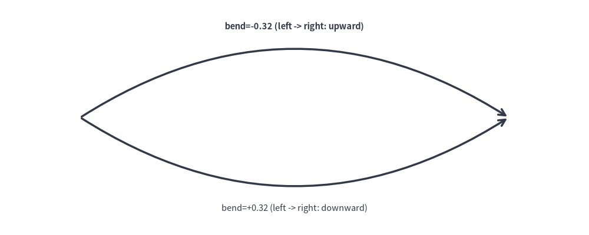
3.3. 2 次ベジェ曲線 (line_bezier1)
単一の制御点 cp に引き寄せられる滑らかな曲線で xy1 と xy2 を結びます。
line_bezier1(
xy1: tuple[float, float],
xy2: tuple[float, float],
cp: tuple[float, float],
*,
style: Style,
arrow_head: Literal["", "-", "->", "<-", "<->"] | str = "",
) -> None
| パラメータ | 型 | デフォルト | 説明 |
|---|---|---|---|
xy1 |
tuple[float, float] |
必須 | 始点 $P_0$。 |
xy2 |
tuple[float, float] |
必須 | 終点 $P_1$。 |
cp |
tuple[float, float] |
必須 | 出発時および到達時の接線方向を決定する 2 次制御点 $P_c$。 |
style |
Style |
必須 | 線スタイルトークン。 |
arrow_head |
str |
"" |
任意の矢印マーカー（""、"-"、"->"、"<-"、"<->"）。 |
from drawlib.canvas import save, setup
from drawlib.lines import line, line_bezier1
from drawlib.shapes import circle
from drawlib.styles import Styles
from drawlib.text import text
setup(width=106, height=46)
p1, p2 = (14, 12), (92, 12)
cp = (53, 37)
# Control point tangent guides
line(p1, cp, style=Styles.MutedDashed)
line(cp, p2, style=Styles.MutedDashed)
circle(cp, radius=1.8, style=Styles.DangerFlat)
text((53, 42), "Control Point (cp)", style=Styles.DangerBold.patch(text_size=11.0))
# Quadratic Bézier curve
line_bezier1(p1, p2, cp=cp, arrow_head="->", style=Styles.SecondaryBold)
save()
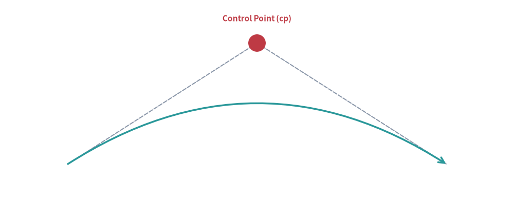
3.4. 3 次ベジェ曲線 (line_bezier2)
2 つの独立した制御点 cp1 と cp2 を用いて xy1 と xy2 を結び、平行なポート間を繋ぐ滑らかな変曲 S 字カーブを表現できます。
line_bezier2(
xy1: tuple[float, float],
xy2: tuple[float, float],
cp1: tuple[float, float],
cp2: tuple[float, float],
*,
style: Style,
arrow_head: Literal["", "-", "->", "<-", "<->"] | str = "",
) -> None
| パラメータ | 型 | デフォルト | 説明 |
|---|---|---|---|
xy1 |
tuple[float, float] |
必須 | 始点 $P_0$。 |
xy2 |
tuple[float, float] |
必須 | 終点 $P_1$。 |
cp1 |
tuple[float, float] |
必須 | xy1 からの出発接線を制御する第 1 制御点。 |
cp2 |
tuple[float, float] |
必須 | xy2 への進入接線を制御する第 2 制御点。 |
style |
Style |
必須 | 線スタイルトークン。 |
arrow_head |
str |
"" |
任意の矢印マーカー（""、"-"、"->"、"<-"、"<->"）。 |
from drawlib.canvas import save, setup
from drawlib.lines import line, line_bezier2
from drawlib.shapes import circle
from drawlib.styles import Styles
from drawlib.text import text
setup(width=106, height=48)
p1, p2 = (14, 24), (92, 24)
cp1, cp2 = (37, 40), (69, 8)
# Tangent guides for both control points
line(p1, cp1, style=Styles.MutedDashed)
line(p2, cp2, style=Styles.MutedDashed)
circle(cp1, radius=1.8, style=Styles.DangerFlat)
text((37, 44.5), "cp1", style=Styles.DangerBold.patch(text_size=11.0))
circle(cp2, radius=1.8, style=Styles.DangerFlat)
text((69, 3.5), "cp2", style=Styles.DangerBold.patch(text_size=11.0))
# Cubic Bézier S-curve
line_bezier2(p1, p2, cp1=cp1, cp2=cp2, arrow_head="->", style=Styles.PrimaryBold)
save()
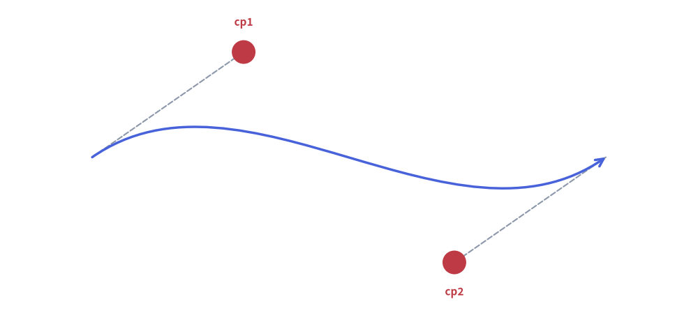
4. 多点折れ線と直交ルーティング (lines)
lines() 関数は、2 点以上の順序付き座標列 [(x0, y0), (x1, y1), ...] を直線セグメントで順に結びます（連続する重複座標は自動的に除去されます）。
lines(
xys: list[tuple[float, float]],
*,
style: Style,
arrow_head: Literal["", "-", "->", "<-", "<->"] | str = "",
) -> None
| パラメータ | 型 | デフォルト | 説明 |
|---|---|---|---|
xys |
list[tuple[float, float]] |
必須 | 2 点以上の順序付き頂点リスト [(x0, y0), (x1, y1), ...]。 |
style |
Style |
必須 | 線スタイルトークン。 |
arrow_head |
str |
"" |
折れ線の始点／終点に配置する矢印マーカー。 |
ソフトウェアアーキテクチャ図や回路図では、重なりのない整然としたバス配線を実現するために直交（マンハッタン）ルーティングが標準的に用いられます。
4.1. L 字ルーティング（90° 折れ 1 回）
まず水平方向に伸ばし、次に垂直方向に折れて 2 つの要素を接続します。
from drawlib.canvas import save, setup
from drawlib.lines import lines
from drawlib.shapes import rectangle
from drawlib.styles import Styles
setup(width=106, height=42)
rectangle((22, 29), width=26, height=14, style=Styles.Neutral, text="Client", text_style=Styles.DarkBold.patch(text_size=11.0))
rectangle((84, 13), width=26, height=14, style=Styles.PrimaryFlat, text="Worker", text_style=Styles.WhiteBold.patch(text_size=11.0))
# L-shaped connection: horizontal from Client, then downward to Worker
lines([(35, 29), (84, 29), (84, 20)], arrow_head="->", style=Styles.DarkBold)
save()
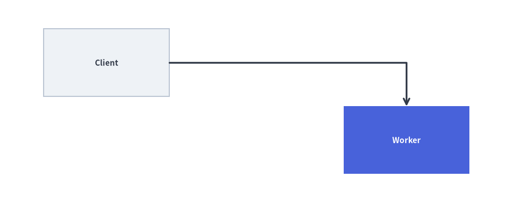
4.2. Z 字ルーティング／ドッグレッグ（90° 折れ 2 回）
中間チャネル $x_{\text{mid}}$ を経由して、段違いに配置された 2 つのコンポーネントを接続します。
from drawlib.canvas import save, setup
from drawlib.lines import lines
from drawlib.shapes import rectangle
from drawlib.styles import Styles
setup(width=106, height=42)
rectangle((22, 30), width=26, height=14, style=Styles.Neutral, text="Service A", text_style=Styles.DarkBold.patch(text_size=11.0))
rectangle((84, 12), width=26, height=14, style=Styles.PrimaryFlat, text="Service B", text_style=Styles.WhiteBold.patch(text_size=11.0))
# Z-shaped dogleg connection across midpoint x_mid = 53
x_mid = 53
lines([(35, 30), (x_mid, 30), (x_mid, 12), (71, 12)], arrow_head="->", style=Styles.DarkBold)
save()
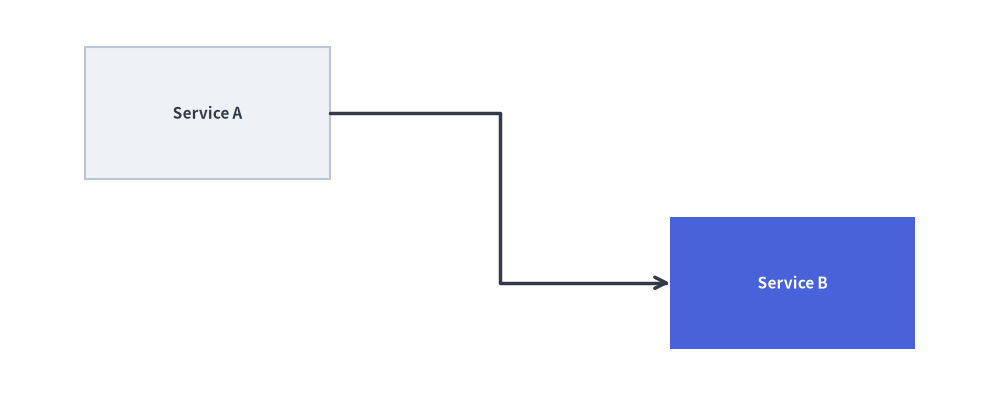
5. 高度な複合セグメント曲線と円弧コネクタ
5.1. 角丸（フィレット）付き多点折れ線 (lines_curved)
lines_curved() は lines() と同じ頂点リスト xys に加えて、角丸フィレット半径 r を受け取ります。内部の各屈曲頂点 $P_i$ が、半径 r の滑らかな 2 次ベジェ曲線ターンに自動的に置き換えられます。
lines_curved(
xys: list[tuple[float, float]],
r: float,
*,
style: Style,
arrow_head: Literal["", "-", "->", "<-", "<->"] | str = "",
) -> None
| パラメータ | 型 | デフォルト | 説明 |
|---|---|---|---|
xys |
list[tuple[float, float]] |
必須 | 折れ線の頂点列 [(x0, y0), (x1, y1), ...]。 |
r |
float |
必須 | キャンバス単位での角丸フィレット半径（$r > 0$）。 |
style |
Style |
必須 | 線スタイルトークン。 |
arrow_head |
str |
"" |
端点の矢印マーカー（""、"-"、"->"、"<-"、"<->"）。 |
[!TIP] フィレット半径の制約: 隣接する角丸同士の間に直線区間が残るよう、フィレット半径は最短セグメント長の半分未満（$r < 0.5 \min_i |P_{i+1} - P_i|$）に収めてください（内部的にも Drawlib は各セグメント長の
0.5倍までにフィレット比率をクランプします）。
from drawlib.canvas import save, setup
from drawlib.lines import lines_curved
from drawlib.shapes import rectangle
from drawlib.styles import Styles
from drawlib.text import text
setup(width=120, height=52)
rectangle((20, 38), width=26, height=14, style=Styles.Neutral.patch(shape_r=2), text="API Ingress", text_style=Styles.DarkBold.patch(text_size=10.5))
rectangle((60, 26), width=24, height=14, style=Styles.Neutral.patch(shape_r=2), text="Firewall", text_style=Styles.DarkBold.patch(text_size=10.5))
rectangle((100, 14), width=26, height=14, style=Styles.PrimaryFlat.patch(shape_r=2), text="Core DB", text_style=Styles.WhiteBold.patch(text_size=10.5))
# Route around the central Firewall box with r=6.0 rounded corners
waypoints = [(33, 38), (60, 38), (60, 44), (100, 44), (100, 21)]
lines_curved(waypoints, r=6.0, arrow_head="->", style=Styles.PrimaryBold)
text((80, 48), "lines_curved(..., r=6.0)", style=Styles.DarkBold.patch(text_size=10.5))
# Bottom return path with smaller fillet radius r=4.0
return_pts = [(87, 14), (20, 14), (20, 31)]
lines_curved(return_pts, r=4.0, arrow_head="->", style=Styles.MutedDashed)
text((53, 8.5), "Async Audit Trail (r=4.0)", style=Styles.DarkBold.patch(text_size=10.0))
save()
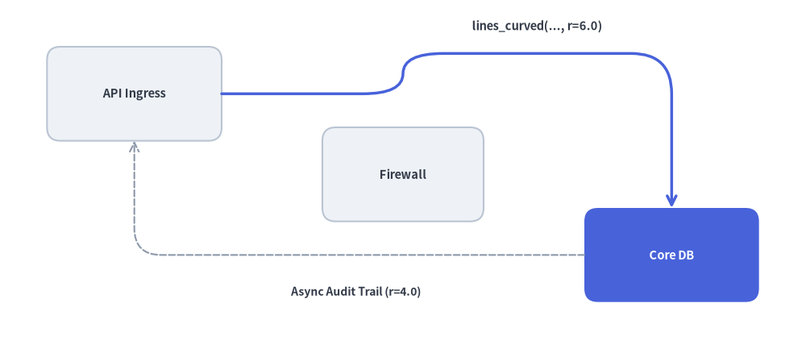
5.2. 複合マルチセグメント・ベジェパス (lines_bezier)
lines_bezier() は、始点 xy から始まり、path_points に定義された直線セグメント、2 次ベジェ曲線、3 次ベジェ曲線の任意の組み合わせを単一の連続ベクターパスとして連結描画します。
lines_bezier(
xy: tuple[float, float],
path_points: list[
tuple[float, float]
| tuple[tuple[float, float], tuple[float, float]]
| tuple[tuple[float, float], tuple[float, float], tuple[float, float]]
],
*,
style: Style,
arrow_head: Literal["", "-", "->", "<-", "<->"] | str = "",
) -> None
パラメータ／path_points の要素 |
タプル構造 | パスセグメントの挙動 |
|---|---|---|
xy |
(x0, y0) |
パスの開始座標（Path.MOVETO）。 |
| 直線セグメント | (x, y) |
(x, y) までの直線（Path.LINETO）。 |
| 2 次ベジェセグメント | ((cp_x, cp_y), (x, y)) |
制御点 cp を経由して (x, y) に至る 1 制御点曲線（Path.CURVE3）。 |
| 3 次ベジェセグメント | ((cp1_x, cp1_y), (cp2_x, cp2_y), (x, y)) |
cp1・cp2 を経由して (x, y) に至る 2 制御点曲線（Path.CURVE4）。 |
from drawlib.canvas import save, setup
from drawlib.lines import lines_bezier
from drawlib.shapes import circle, rectangle
from drawlib.styles import Styles
from drawlib.text import text
setup(width=124, height=52)
circle((16, 16), radius=8.5, style=Styles.Neutral, text="Source", text_style=Styles.DarkBold.patch(text_size=10.0))
rectangle((106, 36), width=24, height=14, style=Styles.PrimaryFlat.patch(shape_r=2), text="Sink", text_style=Styles.WhiteBold.patch(text_size=11.0))
# Compound path: straight run -> cubic S-curve -> straight run -> quadratic turn
compound_points = [
(40, 16), # 1. Straight segment to (40, 16)
((53, 16), (53, 36), (66, 36)), # 2. Cubic S-curve to (66, 36)
(82, 36), # 3. Straight segment to (82, 36)
((88, 44), (94, 36)), # 4. Quadratic hop into Sink port
]
lines_bezier(
xy=(24.5, 16),
path_points=compound_points,
arrow_head="->",
style=Styles.PrimaryBold.patch(line_arrow_head_fill=True),
)
text((33, 10.5), "1. Straight", style=Styles.DarkBold.patch(text_size=10.0))
text((42, 31), "2. Cubic S-Curve", style=Styles.DarkBold.patch(text_size=10.0))
text((74, 30.5), "3. Straight", style=Styles.DarkBold.patch(text_size=10.0))
text((88, 45.5), "4. Quadratic", style=Styles.DarkBold.patch(text_size=10.0))
save()
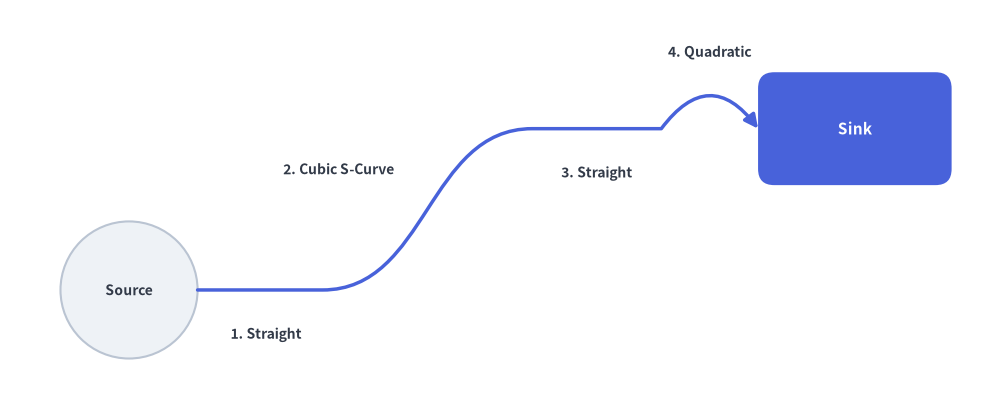
5.3. 楕円弧・円弧コネクタ (line_arc)
line_arc() は、xy を中心とする楕円または円の外周に沿った開いたベクター円弧ストロークを描画します。ステートマシンの自己遷移（セルフループ）、リトライ表示、循環フィードバック矢印に最適です。
line_arc(
xy: tuple[float, float],
width: float,
height: float,
*,
style: Style,
angle_start: float = 0,
angle_end: float = 180,
angle: float = 0,
arrow_head: Literal["", "-", "->", "<-", "<->"] | str = "",
ccw: bool = True,
) -> None
| パラメータ | 型 | デフォルト | 説明 |
|---|---|---|---|
xy |
tuple[float, float] |
必須 | 仮想楕円の中心座標 (cx, cy)。 |
width |
float |
必須 | 楕円の水平方向の全直径 $2 R_x$（真円の場合は width == height）。 |
height |
float |
必須 | 楕円の垂直方向の全直径 $2 R_y$。 |
style |
Style |
必須 | 線スタイルトークン。 |
angle_start |
float |
0 |
度数法による開始角度（$0^\circ$ = 3 時方向、$90^\circ$ = 12 時方向、$180^\circ$ = 9 時方向、$270^\circ$ = 6 時方向）。 |
angle_end |
float |
180 |
度数法による終了角度。 |
angle |
float |
0 |
xy を中心とする楕円フレーム全体の反時計回り回転角（度）。 |
arrow_head |
str |
"" |
端点の矢印マーカー（""、"-"、"->"、"<-"、"<->"）。 |
ccw |
bool |
True |
angle_start から angle_end への描画回転方向（True = 反時計回り、False = 時計回り）。 |
from drawlib.canvas import save, setup
from drawlib.lines import line, line_arc
from drawlib.shapes import rectangle
from drawlib.styles import Styles
from drawlib.text import text
setup(width=120, height=58)
# Nodes
rectangle((32, 26), width=28, height=14, style=Styles.PrimaryFlat.patch(shape_r=2), text="Queue Worker", text_style=Styles.WhiteBold.patch(text_size=10.5))
rectangle((88, 26), width=28, height=14, style=Styles.SecondaryNeutral.patch(shape_r=2), text="Payment API", text_style=Styles.DarkBold.patch(text_size=10.5))
# Forward request
line((46, 26), (74, 26), arrow_head="->", style=Styles.DarkBold)
# 1. Clockwise self-loop retry arc above Queue Worker (ccw=False)
line_arc(
xy=(32, 33),
width=14,
height=14,
angle_start=200,
angle_end=340,
ccw=False,
arrow_head="->",
style=Styles.DarkBold,
)
text((32, 45.5), "Self-Loop Retry (ccw=False)", style=Styles.DarkBold.patch(text_size=10.5))
# 2. Clockwise elliptical feedback loop underneath (0° -> 180°, ccw=False)
line_arc(
xy=(60, 20),
width=56,
height=18,
angle_start=0,
angle_end=180,
ccw=False,
arrow_head="->",
style=Styles.MutedDashed.patch(line_width=1.8),
)
text((60, 5.5), "Backpressure / Rate-Limit Feedback", style=Styles.DarkBold.patch(text_size=10.5))
save()
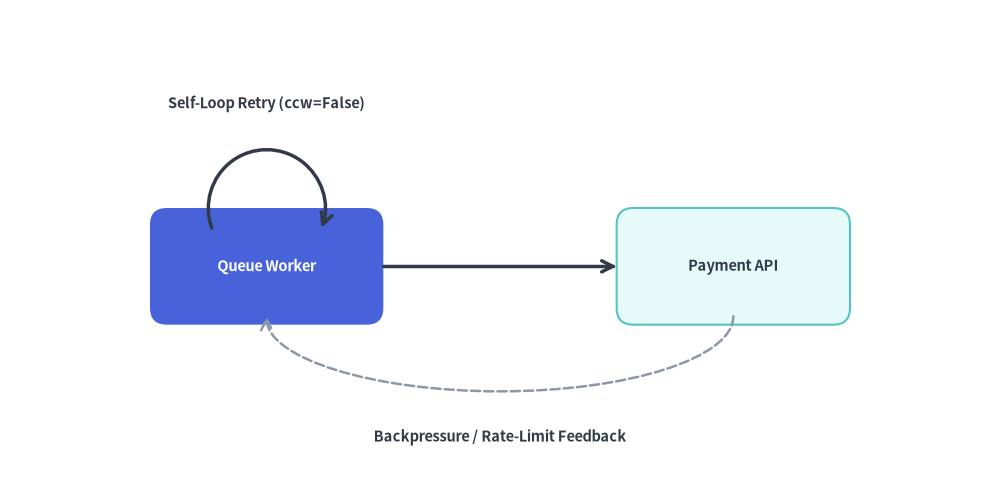
[!NOTE] バウンディングボックスでの自動クリッピングやラベル配置を備えた自動直交ルーティングを行いたい場合は、高レベルコンポーネントである アーキテクチャ図 または フロー図 の利用を検討してください。